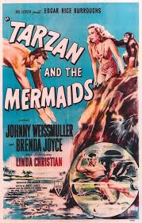

After years in civilized society, I got bored and returned to the jungle. My mission: finish clear cutting the jungle.
See my inspiring story
Tarzan and City of GoldUpon saving a woman named Thia from the Bulgani gorilla tribe, Tarzan learns that she is from Athne the City of Ivory and had been chased away by enemy soldiers from Zandor the City of Gold. While helping Thia back to Athne, Tarzan ends up captured by the Zandorians. While imprisoned, Tarzan meets his cellmate Phobeg who tells him of Queen Nemone who has the two of them fight in the arena. Once Fobeg is freed, Tarzan ends up incarcerated with Thia after harming her prime minister Tomos. However, Fobeg has a plan to free Tarzan and Thia. |
|
Tarzan and the Graveyard of the ElephantsUpon discovering elephant skeletons without their tusks, Tarzan discovers that soldiers led by King Aga of Novard is behind this and his armies are looking for the Graveyard of the Elephants. Tarzan discovers that the Novardians worship the woolly mammoth Bentor (whom they consider a god) and want Tarzan to take them to the Graveyard of the Elephants in order to harvest the tusks there. |
|
|  |
Tarzan and the Amazon PrincessTarzan meets a feral woman named Dorrae who can also communicate with animals like Tarzan does and lives in the jungles with the lions Ola and Utu who have raised her since her childhood. Tarzan discovers that the locket around her neck belongs to the royalty of the Amazons causing Tarzan to take Dorrae to the Amazons to look into this. Once Tarzan has gotten Dorrae back to Queen Arcad, he is unaware that the Captain of the Guard Rowanda had orchestrated Dorrae's extermination years ago so that she can become the heir to the throne. To make matters worse, the water monster Gordo continuously attacks the tribe to find the egg that went missing from her nest. |
This page has been coded during the FullStack program @LeWagon. I am ready to return to the jungle.